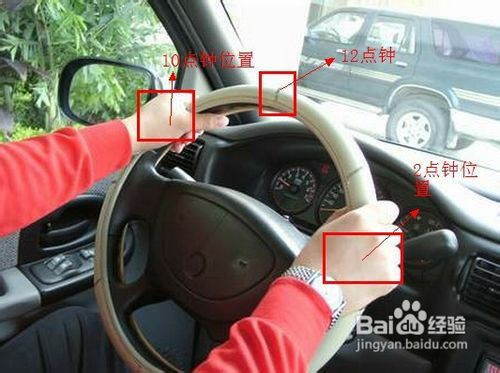
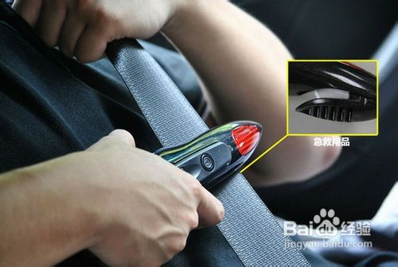
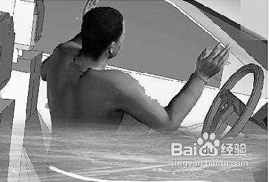
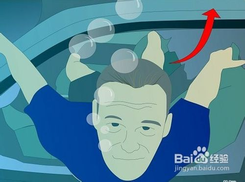

怎样从淹水的车子里逃生
任何的交通事故都是可怕的，但是如果你的车子掉进了水里，并且你本人被困在车内,这个时候你该何去何从呢？
其实，大多数的死亡都是因为惊慌，没有计划也不知道车子在水里会发生什么。当车子溺水时果断采取行动，快速的从车中出来，即使是在洪水泛滥的沉入水中的车中也是可以获救的。今天小猪就和大家分享从淹水的车子中逃生方法
步骤/方法
1.将双手放到方向盘的10点和2点钟位置，采取防冲击姿势减小影响
一旦你意识到自己已经驶离路面将要落水，采取防冲击的保护姿势。将双手放到方向盘的10点和2点钟位置。车子的冲击影响会打开车内的安全气囊系统，而其他的姿势则会在此类事件中造成严重受伤。记住，气囊膨胀的极快，0.04秒左右就可以启动。一旦避开了车子的冲击影响，立刻准备下一步。

要点：保持冷静。恐慌会减少能量，用尽宝贵的空气，否则将彻底报废。强调下如何逃出的秘诀并且将精力集中在眼前的状况之中。当你成功逃出之后，恐慌也就不复存在。
2.解开安全带，从大孩子先解开。
安全带是第一件需要想到的，但是却在恐慌之中常被忘记。尤其是车上有小孩的情况，要解开孩子，从最大的开始，因为他可以帮助其他的孩子。如果安全带不能解开，可以锋利的物品割断。

要点：忘掉你的手机。你的车不可能等着你打电话，而且可悲的是很多人通过这种方式想要获救都失去了生命。抓紧时间逃出。
3.一旦能看到水面就立刻开窗
不要去管车门，而是集中精神在车窗。一辆车的电气系统可以在水中支持最多3分钟，所以首先试着采用电动的方法打开车窗。很多人不认为车窗是逃生的选择，不是因为恐慌和缺少窗户逃生的常识就是因为他们关注的是很多有关车门和下沉的错误信息。

要点：车子落水下沉有一个时间，不要害怕开车窗车子就会下沉。要先争取时间逃生，而打开车门后车子5到10秒钟就会沉入水底。
4.打碎车窗
如果你打不开车窗，或者是仅仅打开了一半，你就不得不打碎它。你需要使用工具（逃生锤砸玻璃四角）、双脚、利器甚至是女士的高跟鞋打碎车窗，也许让水进入车内会与直觉相反，但是越早打开车窗，你就可以越早的通过它而逃生。
感谢网友@wangyan83907提供的评论和信息
前挡风玻璃砸碎也无法逃跑，因为有胶粘连在一起，所以选择一定是侧窗；
高跟鞋、安全锤无法打碎玻璃，还是普通的钉锤最有效；
当车落水时，如果用全身力气，车门是有可能被打开的。
另外附上汽车头枕破窗的视频教程给大家参考
5.通过打破的车窗逃生。
深呼吸一口气，从车窗中游出。打碎车窗的同时，水会涌入车内，所以要对此有所预见并且用力的游出去。立刻游出逃生比等在车内等要好得多。最好是脱去身上的牛仔裤等一些容易吸水或者是质量比较沉的东西。

要点：首先照看好孩子们。竭尽全力将他们推出水面。如果他们不会游泳，寻找一下是否有漂浮物可以帮助他们上浮。如果没有，大人就要立刻带着他们浮出水面。当你离开车体的时候，不要蹬腿，以免伤到后面的人，尽量用胳膊保持向上前进。如果车子下沉很快而你还没有出去，尽力尝试从车窗出去。如果有孩子在车里，告诉他保持呼吸平稳直到水没过胸部。
6.尽快的游出水面。
离开车体并尽量迅速的游出水面。如果你不知道哪个方向，就寻找光亮或者是你看到气泡上升的方向。小心你的周围和水面，有可能会遇到障碍物或者是上方的船只。如果是在冰面，你就必须径直向车子造成的大洞去游。一定要尽量避免受伤，全力迅速的浮出水面。
7.尽可能的寻求医疗救助。
当你成功逃生之后，一定要尽快尽可能的寻求帮助，保持身体机能的正常，并且找到最近的医院进行检查和治疗。
紧急情况的应对
1.如果车窗玻璃无法打开，尝试利用天窗或者前后挡风玻璃窗离开。
2.如果无法从车窗逃走，尝试慢慢将车门打开，不过车外水压大会令车门很难开启。
3.若车门亦无法打开，车主需要镇定，待车身入睡至接近顶部时，先吸一口气，尝试打开车门又出。因为此时车内外压力接近，车门较容易打开。
注意事项
逃生线路： 解开安全带-解开孩子们-打开车窗-逃生。
保证车内有紧急逃生的工具，如果没有可以应急找写尖锐的东西，高跟鞋也是可以的。
你的衣服和较重的工具可能会使你下沉，减轻重量快速上浮。
遇到这种情况很难指示别人，因此要在下沉钱有所准备和讨论，方便快速行动。
不要关闭车灯，车灯装置是防水的，不仅可以在水下帮你照明也方便之后对车子的打捞。
不要带任何不必要的重物在这种情况下，也不要一心等待救援，迅速逃生才是最关键的。
参考资料
转载来源-百度经验。
|